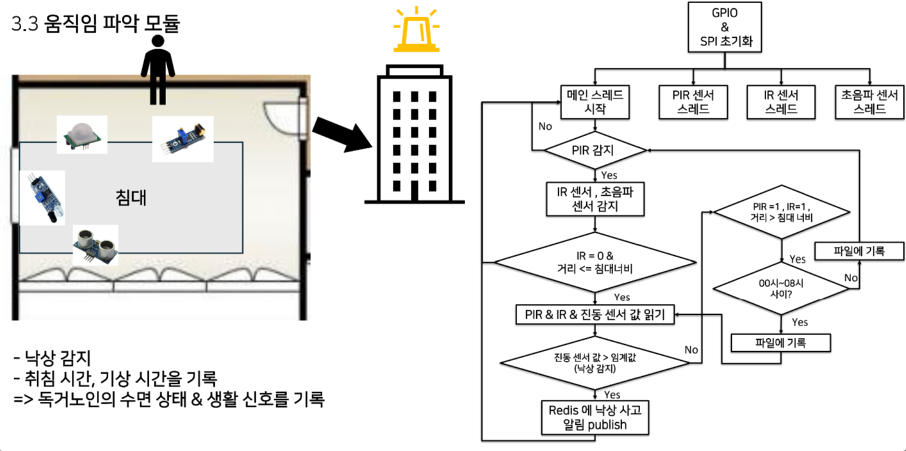

양채원
휴대전화: 010-3488-7508 | 이메일: kally1239@gmail.com
주소: 경기도 용인시 수지구 만현로 25 102동 1205호
학력
| 2021.03 ~ 2026.02 | 아주대학교 산업공학과(주) / 소프트웨어학과(복수) (학점 3.7/4.5) |
|---|---|
| 2017.03 ~ 2020.02 | 용인홍천고등학교 |
어학
| 2025.07.13 | TOEIC 860점 (YBM) |
|---|---|
| 2024.03.24 | OPIc IH (ACTFL) |
자격증
| 2025.06.27 | SQLD (SQL 개발자) - 한국데이터산업진흥원 |
|---|---|
| 2024.09.06 | ADsP (데이터 분석 준전문가) - 한국데이터산업진흥원 |
수상
프로젝트 경험
물류센터 작업자 과로 방지 서비스 (산업공학종합설계)
- 기간: 2025.03.03 ~ 2025.06.30
- 참여 인원: 5명
- 링크: https://v0-admin-and-worker-accounts.vercel.app
- 사용 언어/기술: JavaScript(Next.js), Python(Django), Firebase
- 프로젝트 소개: 실시간 작업량 모니터링 및 피로도 기반 작업 스케줄 자동 배정 서비스
- 담당 업무: Django 기반 API 서버 개발, Firebase 구조 설계 및 연동, 프론트엔드 개발
- 프로젝트 수행 사항:
- Next.js를 이용한 관리자/작업자 대시보드 구현
- Firebase Realtime Database, Firestore에 데이터 저장 및 관리
- 심박수처럼 실시간 수집이 필요한 데이터는 Firebase Realtime Database로, 작업자/관리자 프로필 정보는 Firestore로 분리하여 데이터 특성에 따른 적절한 DB 선택
- 주 단위 작업 스케줄링 및 일 단위 피로도 분석을 배치 처리로 하여 일정 시간마다 자동 실행하도록 로직 구현
- Firebase SDK의 클라이언트 API를 통해 CRUD 요청을 처리함
- 팀원들의 피드백을 기반으로 UI/UX를 개선하여 사용자 경험을 향상함
- 배운 점:
- 데이터 분석, 아두이노 등 다른 파트와의 협업 과정에서 소통에 어려움이 있었으나 데이터 흐름을 도식화하여 시각적으로 표현함으로써 효과적으로 소통할 수 있음을 깨달음
- 데이터의 호출 패턴, 서비스 요구사항, UI 등을 고려하여 DB를 설계해야 효율성과 유지보수성이 좋다는 것을 깨달음
- 다양한 서비스 사용 시나리오를 고려해 에러 상황과 메시지를 명확하게 처리하는 것이 유지보수성 향상에 중요하다는 것을 느낌

산학협력프로젝트: 자율주행 데이터 플랫폼 개발 참여 및 자율주행 강화학습 연구
1. 자율주행 데이터 서비스 플랫폼 개발
- 기간: 2025.06.30 ~ 2025.08.30
- 참여 인원: 4명
- 사용 언어/기술: Express, TypeScript, React, Docker, Linux
- 프로젝트 수행 사항:
- 자율주행 데이터 관리·조회가 가능한 웹 기반 서비스 플랫폼 개발
- Express 기반으로 자율주행 메타데이터를 pagination 없이 전부 조회하는 API 개발
- Docker 기반 MongoDB 컨테이너 실행 및 웹 서버와 연동
- 배운 점: DDD 구조 기반의 프로젝트 아키텍처를 이해하고, Docker와 Express 프레임워크 활용 능력 습득
2. Actor-Critic 모델 기반 자율주행 강화학습 연구
- 기간: 2025.03.02 ~ ing
- 참여 인원: 3명
- 사용 언어/기술: Python, PyTorch
- 프로젝트 수행 사항:
- PID control로 생성한 오프라인 자율주행 데이터를 이용하여 Offline-to-online learning을 적용한 자율주행 강화학습 제어 모델 학습 수행
- 배운 점: 강화학습 기반 제어 알고리즘 학습을 위한 실험 환경 구성 및 딥러닝 학습/검증 프로세스 이해
멋쟁이사자처럼 해커톤 - 디지털 리터러시 향상 크롬 익스텐션
- 기간: 2023.03.06 ~ 2023.08.31
- 참여 인원: 4명
- 사용 언어/기술: Java, Spring Boot, Spring JPA, MySQL, AWS
- 프로젝트 소개: 유튜브 가짜뉴스 판별을 보조해 디지털 리터러시 향상을 돕는 크롬 익스텐션
- 프로젝트 수행 사항:
- Spring Boot 기반 백엔드 개발
- MySQL DB에 서비스 회원 정보, 응답 데이터 저장 및 관리
- Spring JPA 기반 ORM 매핑 및 Repository 계층 구성
- GPT API를 활용하여 유튜브 영상 스크립트 분석 기능 구현
- AWS EC2 인스턴스를 활용한 백엔드 서버 배포
- 배운 점:
- Spring JPA를 사용해 도메인 객체와 MySQL 테이블을 매핑하여 관리하는 방법을 이해함
- DTO/DAO 분리 설계를 통해 명확한 데이터 흐름을 구성함
- AWS EC2 환경에서 Spring Boot 서버를 배포하고 실제 서비스를 운영해보는 경험을 함
- 무박 2일이라는 제한된 시간 내에 기획부터 개발&배포까지 진행하며 한계에 도전해보고 신속한 개발 및 스트레스 상황에서의 의사소통 능력을 향상함
자율주행 시계열 데이터 최적 경로 탐색 연구 - 한국인터넷정보학회 춘계학술대회 논문 게재 및 아주대학교 소프트콘 연구부문 장려상 수상
- 기간: 2025.01.02 ~ 2025.04.22
- 참여 인원: 3명
- 사용 언어/기술: Python, NetworkX, TensorFlow
- 프로젝트 수행 사항:
- NuScenes 자율주행 오픈소스 데이터셋 기반, 위치별로 여러 시간대에 목격된 장애물의 개수를 집계하여 그래프 구조로 모델링
- 다익스트라 알고리즘을 기반으로 거리와 장애물 가중치를 동시에 고려하는 목적 함수 설계
- 제안 기법과 기존 다익스트라를 비교 실험하여, 장애물 회피 성능과 거리 변화율을 분석
- JavaScript, Flask로 클릭을 통해 노드의 연결관계를 생성하고 저장하는 데이터 전처리 툴 제작
- 논문 작성
- 배운 점:
- 연구 결과를 독자 입장에서 설득력 있게 전달하기 위해 문제 정의부터 결과 해석까지 논리 흐름을 구성해보는 과정이 중요하다는 걸 체감함
- 1만 개 정도의 노드 데이터를 수작업으로 처리하는 비효율을 느끼고 직접 전처리 툴을 만들어 사용하면서 효율을 높일 수 있는 지점을 찾아 개선하는 것의 중요함을 깨달음
미국 주식 데이터 분석 프로젝트 - 2024 NH 투자증권 빅데이터 경진대회 본선 진출
- 기간: 2024.09.02 ~ 2024.11.20
- 참여 인원: 3명
- 사용 언어/기술: Python, Pandas, Scikit-learn, Django, SQLite, Azure OpenAI API
- 프로젝트 수행 사항:
- Django 서버에서 yfinance, Pandas, NumPy 를 통해 시세 데이터를 불러오고 분석
- Yahoo Finance에서 나스닥 상위 100개 종목의 시세 데이터를 수집해 Django 서버 내부 SQLite DB에 저장
- 마코위츠 포트폴리오 이론 기반의 최적 자산 배분 알고리즘 구현
- 포트폴리오 도출 과정을 ProcessPoolExecutor로 병렬 처리하여 계산 시간 단축
- Python PDF 라이브러리와 Azure OpenAI를 이용하여 초보 투자자 대상 리포트 생성 프로그램 제작
- 배운 점:
- 병렬 처리를 통해 포트폴리오 최적화 알고리즘의 연산 병목을 개선함
- 금융에서의 생성형 AI를 접목해보며 금융 리터러시에 대해 관심을 가지게 됨
침수 예측 지도 웹 서비스 개발 (공개 SW 개발자 대회)
- 기간: 2024.06.30 ~ 2024.08.23
- 참여 인원: 4명
- 사용 언어/기술: React, Leaflet.js, Django, AWS, XGBoost
- 프로젝트 수행 사항:
- 기상청 API로 수집한 시간별 강수량 데이터와 국토정보플랫폼에서 획득한 지형 고도 데이터를 feature로 사용하여 침수 가능성을 예측하는 XGBoost 모델 학습
- 모델 학습 결과를 기반으로 지역별 침수 가능성을 예측하고, Leaflet.js를 활용해 지도에 시각화
- 침수 위험도를 마커로 표현하고, 사용자가 선택한 행정구역에 따라 지도 자동 줌인 기능 구현
- 실시간 API 호출에 따른 응답 지연 문제를 해결하기 위해 강수 데이터를 주기적으로 SQLite DB에 저장하고 사전 예측값을 저장하는 배치 파이프라인 구성
- Django 백엔드에 예측 결과 요청용 API 엔드포인트 구성, Gunicorn + EC2 환경에서 서비스 배포
- 배운 점:
- 사용자 경험을 위해서는 UI뿐만 아니라 서버에서의 응답시간도 중요하다는 것을 깨달음
- 침수 여부를 이진 분류로 정의하고 시간 누적 강수량 기준을 목적변수로 삼아 XGBoost 모델을 학습하는 경험을 해봄
- leaflet.js를 사용한 지도 웹 서비스 개발 및 사용자 경험을 고려하여 marker 표현 방식이나 줌 기능 추가
해양 생태계 데이터 모니터링 플랫폼 제안 - Microsoft AI Challenge for Biodiversity 장려상 수상
- 기간: 2023.12.20 ~ 2024.01.29
- 참여 인원: 3명
- 사용 언어/기술: Python, Numpy, Pandas, Pytorch
- 프로젝트 수행 사항:
- AI를 활용한 해양 생태계 모니터링 아이디어 제안
- AI Hub에서 제공하는 어류 이미지 데이터로 ResNet 기반 어종 분류 모델 학습 진행
- 어종 종류, 치어/성어, 어병 개체 수 등 생태 지표를 통계적으로 추출하는 시나리오 설계
- 분류 결과를 클라우드 DB에 저장한 뒤, 시각화 플랫폼에서 웹 대시보드 형태로 조회하는 구조 제안
- 기획 단계에서 서비스 흐름도 작성 및 기술 도입 타당성 분석
- 배운 점:
- 사람을 돕는 도구로써 AI를 어떻게 활용하면 될지 방법을 고민하고 기획을 해봄
- ResNet 모델을 실제 이미지 데이터에 적용하여 기술의 실현 가능성과 한계를 검토함
- 기획 아이디어를 타당성, 구현 가능성, 사회적 파급력 관점에서 설득력 있게 제안하는 과정을 경험함
빅데이터 시스템 프로젝트 – Hadoop&PySpark로 파생상품 공시문서 데이터 분석
- 기간: 2024.03.10 ~ 2024.06.07
- 참여 인원: 3명
- 사용 언어/기술: Python, PySpark, Hadoop, GraphFrames, KMeans, GCP Dataproc
- 프로젝트 소개: 금융감독원 DART 공시 시스템에서 수집한 약 20GB 규모의 파생상품 공시문서를 분석하여 우리나라 파생상품 시장의 기초자산 편중성과 리스크 구조를 파악함.
- 담당 업무:
- DART API 기반 공시문서 크롤링 및 XML 파싱 자동화
- 기초자산-파생상품 간 관계 기반 네트워크 그래프 생성 및 PageRank 분석
- 스파크 기반 KMeans 클러스터링을 통해 파생상품 유형 분류 및 발행사-클러스터 간 분포 분석
- GCP Dataproc으로 마스터 노드 1개, 작업자 노드 3개의 분산 환경에서 전체 데이터 처리 및 분석 수행
- matplotlib을 이용해 분석 결과를 그래프·히트맵 등으로 시각화
- 배운 점:
- 대규모 비정형 문서 데이터를 정제하고 분석하는 파이프라인 구축 경험
- 금융 데이터 구조를 이해하고 그래프로 구조화하여 관계를 기반으로 한 인사이트 도출
- PySpark, Hadoop, GCP Dataproc을 이용한 대용량 빅데이터 처리 경험
시스템 프로그래밍 팀 프로젝트 - 고독사 위험 계층을 위한 안전 모니터링 시스템
- 기간: 2024.09.30 ~ 2024.12.22
- 참여 인원: 4명
- 사용 언어/기술: C, Raspberry Pi, GPIO, Pthreads, Redis
- 프로젝트 소개: 센서를 기반으로 낙상 여부를 실시간 감지하고, 감지된 이벤트를 Redis를 통해 전달하는 독거노인 안전 모니터링 시스템 개발
- 담당 업무:
- 낙상 판단 로직 설계 및 구현
- GPIO 기반 모션 센서, 진동 센서, 초음파 센서 처리 로직 구현
- 멀티스레딩 기반 센서 데이터 비동기 수집 및 스레드 동기화
- 실제 낙상 시뮬레이션을 통한 테스트 및 통합 점검 수행
-

낙상 감지 흐름도 - 침대 위 상태 인식 후 낙상 이벤트 발생 조건 만족 시 감지
- 배운 점:
- GPIO를 통한 하드웨어 제어와 멀티스레딩 프로그래밍 경험
- 낮은 수준의 디바이스 제어와 실시간 이벤트 감지 시스템의 작동 원리 이해
- 서버-클라이언트 구조의 TCP 소켓 통신을 통해 라즈베리파이 간의 이벤트 전송 방식 이해
운영체제 프로젝트 수행
Project #1: My Amazing Shell
- 기간: 2024.03.26 ~ 2024.04.12
- 참여 인원: 개인
- 소스 코드: pa1.git
- 사용 언어/기술: C, Linux System Call
- 프로젝트 소개: System Call을 이용한 쉘 프로그램 구현
- 프로젝트 수행 사항: cd/alias 처리, 프로세스 파이프 연결 등 주요 쉘 기능을 직접 구현하며 시스템 콜의 활용 방식에 대한 이해를 높임.
- 배운 점: pipe()와 fork()를 사용하는 과정에서 프로세스 간 데이터 흐름과 자원 관리를 이해함
과제 #2: Processor Scheduler Simulator
- 기간: 2024.04.19 ~ 2024.05.04
- 참여 인원: 개인
- 소스 코드: pa2.git
- 사용 언어/기술: C
- 프로젝트 소개: 운영체제의 스케줄러 구현
- 프로젝트 수행 사항: C 언어로FCFS, SJF, STCF, RR, Priority, Aging, PCP, PIP 등의 스케줄링 알고리즘 구현
- 배운 점: 다양한 스케줄링 알고리즘을 직접 구현하면서 운영체제의 스케줄링 알고리즘의 특징을 이해
과제 #3: Virtual Memory Simulator
- 기간: 2024.05.14 ~ 2024.06.07
- 참여 인원: 개인
- 소스 코드: os-pa3.git
- 사용 언어/기술: C
- 프로젝트 소개: 페이지 테이블과 TLB를 포함한 가상메모리 시뮬레이터 구현
- 프로젝트 수행 사항: page allocation/deallocation, TLB 캐시 관리, Copy-On-Write 로직 설계 및 구현을 통해 메모리 시뮬레이터 구성
- 배운 점: 가상 메모리 동작 원리, TLB 캐시 정책, Copy-On-Write 기반 프로세스 복제 이해
빅데이터 분석 프로젝트 - 서울시 배리어프리 상위권 법정동 도출
- 기간: 2023.09.30 ~ 2023.12.08
- 참여 인원: 4명
- 사용 언어/기술: Python, Pandas, Numpy, GeoPandas, QGIS, Matplotlib
- 프로젝트 소개: 서울시의 법정동 중 배리어프리 친화도가 높은 지역을 식별하기 위한 정량적 분석 프로젝트.
- 담당 업무:
- 공공데이터포털,국토정보플랫폼, 카카오 지도 API, Google Map API를 이용한 데이터 수집 및 전처리
- 지리적 특성과 편의시설 접근성을 고려한 배리어프리 지표 구성
- Python의 Pandas와 Numpy를 활용해 정규화, 결측치 제거 등 데이터 전처리 수행
- 정규화 후 PCA, 클러스터링, 요인 분석을 활용하여 장애인 친화도 상위 클러스터 도출
- matplotlib를 이용한 분석 결과 시각화
- 배운 점:
- Pandas 및 NumPy를 이용한 데이터 전처리 능력을 향상
- 데이터를 해석하고 인사이트를 얻어내는 능력을 기름
- 오픈 API, 구글 API등을 사용하여 데이터를 수집하고 처리하는 능력을 향상
활동 및 경험
아주대학교 분산병렬컴퓨팅 연구실 인턴
- 자율주행 환경에서의 강화학습 적용 연구 참여
- 자율주행 데이터 기반 시뮬레이션 및 시각화 도구 개발
- 데이터 서비스 플랫폼 구축 프로젝트 기여
중앙도서관 면학장학생
- 신청 도서 주문서 작성 및 입수 처리
- 도서관 시스템 내 도서 정보 전산 입력
동아리활동
- SW학과 소학회 한터 - 운영체제 스터디 및 코딩테스트 스터디 참여
- 학과 운영체제 강의 내용 정리 및 발표
- 코딩 테스트 알고리즘 문제풀이 및 공유
렛츠(LETS) 학원 조교
- 질문 응대 및 개별 학습 피드백 진행
- 출결 관리 및 학습 보조 업무 수행
오늘수학학원 조교
- 질문 응대 및 개별 맞춤 설명
- 시험지 제작 및 문항 검수
- 소규모 학생 대상 수업 보조 및 강의
교육/연수
| 교육명 | 교육내용 | 교육기관 |
|---|---|---|
| 멋쟁이사자처럼 대학 백엔드 11기 | Java 및 SpringBoot Framework 기초 학습 및 실습, 해커톤을 통한 프로젝트 진행 | (주)멋쟁이사자처럼 |
| 알고리즘 | 분할정복, 동적계획법, 그래프 알고리즘 등 기본 기법 학습 시간 복잡도 이해 및 알고리즘 분석 방법 학습 |
아주대학교 |
| 컴퓨터 네트워크 | TCP/IP 프로토콜을 중심으로 표준 인터넷 프로토콜 학습 | 아주대학교 |
| 자료구조 | 기본 자료구조와 탐색, 정렬 알고리즘 학습 C언어로 Linked List 및 탐색 알고리즘 구현 실습 |
아주대학교 |
| 오픈소스 SW 입문 | Linux 명령어, Shell Script, Git 활용 버전관리 실습 오픈소스 라이선스 학습 |
아주대학교 |
| 컴퓨터 구조 | ARM 아키텍처 기반 하드웨어 처리 방식 학습 파이프라이닝, 병렬처리, 캐시 등 최적화 개념 학습 |
아주대학교 |
| 빅데이터 시스템 | AWS, GCP 클라우드 및 Hadoop/Spark 기반 빅데이터 처리 학습 Hadoop/PySpark 비정형 데이터 처리 실습 |
아주대학교 |
| 운영체제 | 운영체제의 자원 관리 및 추상화 방법 학습 C언어로 스케줄링, 페이징, 가상 메모리 구현 실습 |
아주대학교 |
| 기계학습 | 대표적인 기계학습 알고리즘의 원리 및 구조 학습 기계학습 알고리즘 응용 프로젝트 수행 |
아주대학교 |
지원동기
● 물류센터에서 느낀 데이터 활용의 가치 ●
물류센터에서 아르바이트를 하면서 데이터를 적절히 활용하는 것이 큰 가치를 만들어 낼 수 있음을 느꼈습니다. 물류센터에서 주문이 들어온 상품을 찾아 피킹하는 업무를 맡았습니다. 처음에는 센터의 규모가 크고 복잡해서 업무를 잘 수행할 수 있을지 걱정이 많았습니다. 그러나 물류센터는 상품의 위치를 A01-02-203처럼 코드화하여 관리하고 있었습니다. 그리고 PDA를 통해 바코드로 상품을 검수할 수 있어 물건을 정확하게 집을 수 있었고, 피킹할 물건의 순서도 최적화된 동선에 따라 앱에서 지정해 주어서 쉽게 업무를 수행할 수 있었습니다. 초보였던 저도 금방 숙련자처럼 일할 수 있게 되는 모습을 보며 데이터를 분석하고 서비스를 만들어 내는 것이 큰 가치를 창출할 수 있다고 느꼈습니다. 이를 계기로 위의 PDA 앱처럼 데이터를 기반으로 사람에게 유용함을 제공하는 기술에 흥미를 가지게 되었습니다.
전공 및 기술 능력
● 데이터 전처리 툴 개발로 80% 효율성 달성 ●
사소한 문제이지만 개선을 통해 효율성을 높일 수 있는 지점을 찾는 것이 업무에 큰 효과를 제공할 수 있다고 생각합니다. 이 생각을 바탕으로 교내 연구 과목에서 1만 개 이상의 도로 네트워크 데이터의 전처리 과정을 단순화한 경험이 있습니다. 데이터 분석을 하기 위해서는 도로 노드의 연결 관계를 만들어 주어야 했습니다. 그러나 데이터에 도로 시작 지점 좌표만 기재되어 종료 지점 좌표를 눈으로 찾아 손으로 직접 입력해야 했었습니다. 그러나 이는 절차가 복잡하여 처리 시간이 오래 걸린다는 문제가 있었습니다. 따라서 Plotly.js와 Flask를 이용하여 데이터를 시각화하고, 두 지점을 클릭하는 단순한 행동을 통해 종료 지점을 자동으로 입력하는 툴을 개발하였습니다. 그 결과 10개의 지점 좌표를 처리하는 데에 약 15분 이상 걸리던 작업을 3분 내외로 단축할 수 있었고, 작업 절차의 단순화를 통해 오류 발생도 줄였습니다. 이 경험을 통해 업무 흐름에서 비효율적인 부분을 파악하고 개선하는 태도를 가지게 되었습니다.
● 병렬 처리를 통한 60% 효율 달성 ●
NH투자증권 빅데이터 경진대회에 참가하여 "주식 초보를 위한 포트폴리오 추천 시스템"을 구현한 경험이 있습니다. yfinance 라이브러리를 사용해 나스닥 상위 100개의 주식 시세 데이터를 수집했습니다. 그리고 100개중 3개의 주식 종목 조합별로 2000번의 몬테카를로 시뮬레이션을 수행하여 샤프 비율이 최대인 최적의 포트폴리오를 구하는 기능을 구현했습니다. 이 과정에서 많은 연산량으로 인해 결과 도출이 지연되는 문제가 있었습니다. 사용자 입장에서 생각해보았을 때 포트폴리오 도출에 시간이 많이 소요되면 불편함이 있을 것이라 생각했습니다. 따라서 Python의 ProcessPoolExecutor을 사용하여 작업들을 4개의 코어에 분산하고 병렬로 실행하여 결과 도출 시간을 60% 감소시켰습니다. 이 경험을 통해 사용자 경험을 개선하기 위해서는 시스템 부분에서도 최적화를 하는 것이 중요함을 깨달았습니다.
성격 및 가치관
● 무협에서 배운 꾸준함의 가치 ●
평소 무협 소설을 즐겨 읽으며 "꾸준한 것이 가장 강한 것이다."라는 명대사를 보고 많은 감명을 받았습니다. 이를 바탕으로 꾸준히 동아리 활동에서 알고리즘 문제 풀이에 참여하여 대회에서 우수상이라는 성과를 거둔 경험이 있습니다. 처음 대회에 참가하였을 때는 한 문제도 풀지 못하여 거의 꼴찌에 가까운 등수를 기록했습니다. 이에 많은 부끄러움과 실망감을 느꼈지만 극복하고 싶었습니다. 따라서 교내 동아리의 알고리즘 스터디에 참여하여 연습을 시작했습니다. 처음에는 알고리즘을 이해하고 구현하는 것과 디버깅을 하는 것에 익숙하지 않아 많은 어려움을 겪었습니다. 하지만 1년간 꾸준히 스터디 활동을 하며 알고리즘을 공부하고 문제 풀이를 진행하자 실력이 크게 성장했습니다. 그 결과 다시 나간 알고리즘 대회에서 우수상을 받을 수 있었습니다. 이 경험을 통해 꾸준함의 힘을 느끼고 당장 가시적인 성과가 없더라도 성장을 위해 매일 조금씩 투자하는 습관을 지니게 되었습니다.
● 힘들어도 웃으면 복이 온다 ●
"힘들어도 웃으며 하자"를 가치관으로 삼으며 어려운 상황에서도 어떻게든 과정을 즐기려고 노력하는 성격을 가지고 있습니다. C언어로 'hello world'만 출력할 수 있는 상태에서 운영체제 과목을 수강하게 되어 수업을 따라가는 데에 많은 어려움을 겪었던 적이 있습니다. 수업의 구현 과제 난이도도 상당하여 프로그래밍 언어에 익숙하지 않은 저에게는 큰 시련이었습니다. 이를 극복하기 위해 교내 동아리의 운영체제 스터디와 C언어 스터디에 참여하였습니다. 수업에서 배운 내용에 비유와 스토리텔링을 추가하며 이해하고 해당 내용을 스터디원들과 공유하며 웃으며 학습하는 시간을 가졌습니다. 스터디에서 내주는 C언어 예제들을 풀어보고 메모리 구조나 동작 과정을 그림으로 그리며 헷갈리는 개념을 정리했습니다. 매주 블로그에 스터디에서 다룬 내용을 올리고 다른 프로그래밍 분야 블로거들과 소통하면서 즐겁게 학습하고자 노력했습니다. 처음에는 수업을 따라가는 것이 불가능하다고 생각되었습니다. 하지만 즐기려는 노력을 통해 빠르게 어려운 부분을 보충하고 무사히 운영체제 과목을 좋은 성적으로 수료할 수 있었습니다. 이 경험을 통해 어려움이 닥치더라도 긍정적으로 받아들이며 즐겁게 헤쳐나가면 무엇이든 해결할 수 있다는 자신감을 얻게 되었습니다.
● 긴장한 만큼 준비하는 성격 ●
평소 긴장을 많이하고 걱정을 자주 하는 단점이 있습니다. 연구실 학부 인턴으로 참여한 산학 협력 프로젝트에서 Express와 TypeScript로 개발된 자율주행 데이터 플랫폼 서비스 유지보수에 참여하여 API 기능을 추가하는 역할을 맡았습니다. 처음에는 낯선 프로그래밍 언어와 프레임워크로 개발된 프로젝트였기에 기존 소스코드를 이해하는 것에 어려움을 겪었습니다. 하지만 신뢰를 주고 맡겨준 일을 반드시 완수해야 한다는 책임감을 가지고 있었습니다. 따라서 프로젝트 구조를 도식화하며 이해하고 모르는 부분은 사수에게 질문하며 확인했습니다. 그리고 업무 외 시간을 활용해 강의를 들으며 부족한 지식을 채워나갔습니다. 그 결과 기존 프로젝트의 구조를 준수하면서 전체 데이터 조회 기능을 추가할 수 있었습니다. 이 경험처럼 걱정과 긴장이 많은 성격을 준비를 더욱 철저히 하는 것으로 극복해나가고 있습니다.
성명: 양채원 (인)